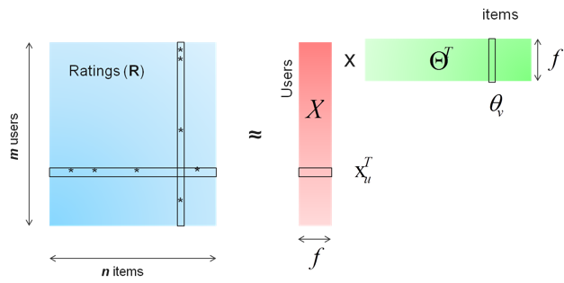
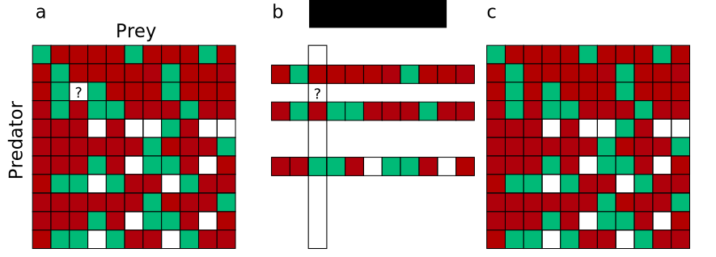
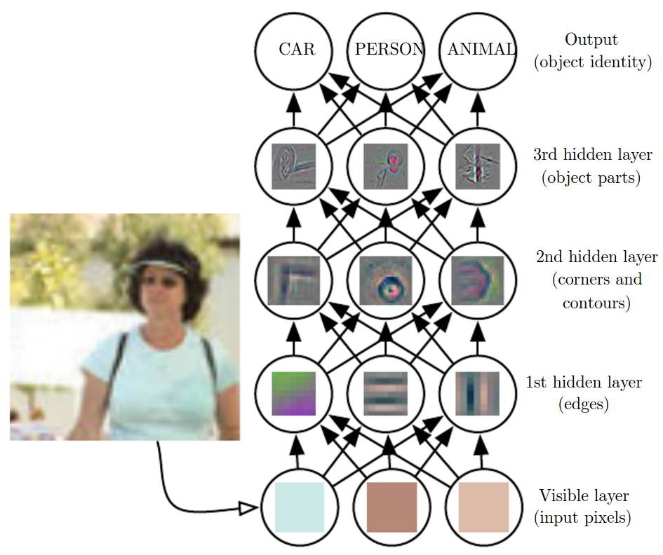

Transfer & Statistical Relational Learning with Applications to Biodiversity
Content
- Machine Learning
- Paper 0: Ecological Interactions and the Netflix Problem
- Paper 1: Transfer from Ecological Theory
- Paper 4: Logic-Based Machine Learning
- Manticore
- Paper 2: Hypergraph Lifting on GPUs
- Paper 3: Indirect Genotype-Phenotype mapping
Machine Learning
Three paradigms of machine learning
Supervised learning
\[\{(\mathbf{x}, y)_i\}_{i=0}^{n-1} \mapsto (\hat{f}(\mathbf{x}) \mapsto y).\]Unsupervised learning
\[\{(\mathbf{x})_i\}_{i=0}^{n-1} \mapsto (\hat{f}(\mathbf{x})).\]Reinforcement learning
\[\langle S, A, T, R \rangle.\]Mapping ML concepts to statistics
Supervised Learning \(\approx\) Classification, Regression.
Unsupervised Learning \(\approx\) Clustering.
Reinforcement learning and non-statistical learning (e.g. inductive logic programming) have no equivalents in statistics.
Unsupervised Learning: Matrix completion
Filling missing entries or (positive-only case) make recommendations.
K-nearest neighbors (instance learning, paper 0)
Deep neural networks (paper 1)
Matrix factorization (Alternating Least Square)

Unsupervised Learning: Probabilistic Graphical Models
\(P(A|B)\) is a whole different thing with many variables...
Holy Quadrality
- Inference: Conditional/Joint/Marginal.
- Inference: MAP.
- Learning: Weights.
- Learning: Structure.
True for all PGMs and many similar knowledge bases: Bayesian networks, Markov fields, Markov logic, ...
Inference: Conditional/Joint/Marginal
Solve \(P(\mathbf{X} = \mathbf{x} \mid \mathbf{Y} = \mathbf{y})\), or just \(P(\mathbf{X} = \mathbf{x})\), or just \(P(x = v)\).

Inference: MAP
Find the most likely joint state of a subset \(\mathbf{X'} \subset \mathbf{X}\).
Learning: Weight
Learning from data the strenght of the relationship between variables.
Example: learning \(w\) in the previous example.
Learning: Structure
Learning which vertices are connected by an edge.
Interlude: Anatomy of Markov networks
...or Markov fields, undirected graphical models.

A Markov Network with 8 variables, 9 edges, and 3 factors:
\[P(a, b, c, d, e, f, g) = \frac{1}{Z}\phi_0(a, b, c)\phi_1(d)\phi_2(e, f, g, h).\]Markov network are often used as log-linear models:
\[P(X = x) = \frac{1}{Z}\exp\left(\sum_j w_j f_j(x)\right).\]
With \(Z\) being a factor for normalization.
There is no closed form solution for maximum likelihood or maximum a posteriori probability, but since the function is concave, it is fairly easy to compute with gradient methods.
Based on MaxEnt.
Paper 0: Ecological Interactions and the Netflix Problem
Data
881 species.
~4% of the entries in the 881 by 881 interaction matrix are interactions.
24 binary traits + body mass for each species.
K nearest neighbour for interactions

Tanimoto similarity
public double userSimilarityForItems(long userID1, long userID2) throws TasteException { /* ... */ }
public double userSimilarityForTraits(long x, long y) {
HashSet<String> xTraits = userTraits.get(x);;
HashSet<String> yTraits = userTraits.get(y);
// Compute tanimoto on items:
int xTraitsSize = xTraits.size();
int yTraitsSize = yTraits.size();
if (xTraitsSize == 0 || yTraitsSize == 0) {
return 0.0;
}
int intersectionSize =
xTraitsSize < yTraitsSize ? setIntersectionSize(yTraits, xTraits) : setIntersectionSize(xTraits, yTraits);
int unionSize = xTraitsSize + yTraitsSize - intersectionSize;
return (double) intersectionSize / (double) unionSize;
}
@Override
public double userSimilarity(long x, long y) throws TasteException {
final double byItems = userSimilarityForItems(x, y);
final double byTraits = userSimilarityForTraits(x, y);
return (1.0 - weightToTraits) * byItems + weightToTraits * byTraits;
}
Results

Results
Supervised learning fails to separate interactions from non-interactions (98% of the entries in the non-interactions are found in the interactions data-set).
Tanimoto (positive-only) without using traits is the most effective method.
Paper 1: Transfer from Ecological Theory
Deep Learning Representation

tl;dr
- Train deep networks with data generated with the niche model.
- C++11 code to generate webs.
- Python script (Theano) for deep learning (Boltzmann machines).
- Write the niche model in first-order logic?
Paper 4: Logic-Based Machine Learning
| Language | Ontological commitment | Epistemological commitment |
|---|---|---|
| First-Order Logic | Facts, objects, relations | True | False | Unknown |
| Probability Theory | Facts | Degree of belief \(\in [0, 1]\) |
| Markov Logic | Facts, objects, relations | Degree of belief \(\in [0, 1]\) |
Adapted from Russell & Norvig (3rd ed., p 290).
In a nutshell
- ...Markov logic is about learning first-order logic sentences, each assigned with a probability \(\in [0, 1]\).
- Probability theory offers soft constraints, a world where many sentences are proven wrong is not impossible, but less likely.
- The more confident we are in a sentence contradicted by some evidence, the less likely the world is.
- Markov logic is a stict superset of first-order logic since \(p = 1.0\) is equivalent to true, and \(p = 0.0\) is equivalent to false.
- And it also a subperset of discrete and finite-precision probability distributions. That is: it has been proven that every probability distribution over discrete or finite-precision numeric variables can be represented as a Markov logic network.
The case for Markov Logic
- Logic for complexity. Probability theory for uncertainty (e.g. collective classification of links).
- Not a black box: FOL sentences are easy to understand (example).
- Facilitates human interventions (knowledge engineering).
- Facilitates computer interventions (e.g. Mihalkova's transfer algorithm).
First-Order Logic
How expressive / powerful is first-order logic?
The general consensus is that it's powerful enough to formalize much of modern mathematics, but not enough for some nuances of natural languages.
Bottom line: it's very expressive, and since it's enough for modern mathematics, it's probably enough for most (or all) knowledge engineering.
Terms
...refer to objects, which can be anything from integers to species, cities, words...
- Variables, e.g. \(x, y, z\). The convention is to start variable names with a lowercase character. A variable ranges over objects of a certain type.
- Constants, e.g \(Wolf, 0, Tokyo\), represent actual objects in the domain.
- Functions, which are mappings between 0 o more terms and another term.
Atomic sentences
An atomic sentence is an element that, alone, is a valid first-order logic sentence.
- True or top: \(\top\), and it's negation False or bottom: \(\bot\).
- Predicates, which are mappings between 0 or more terms to a truth value. They have the same form as functions but can be distinguished by the context: predicates are atomic sentences, not functions.
- Identity, represented by the mysterious = symbol, tests if two terms are the same. Identity can be (and often is) seen as a predicate with two arguments.
A few sentences
\[PrimeNumber(11)\]
\[PrimeNumber(Minus(8, 1))\]
\[\top\]
\[FatherOf(Jesus) = God\]
\[Identity(FatherOf(Jesus), God)\]
\[Dist(Helsinki, Jerusalem)\]
\[Dist(Helsinki, Jerusalem) = 7653.8km\]
\[GreaterThan(Dist(Helsinki, Jerusalem), Dist(Montreal, Quebec))\]
\[Dist(Helsinki, Jerusalem) > Dist(Montreal, Quebec)\]
Connectives
...connect sentences
- The binary connective and: \(x \land y\), which is true only if both \(x\) and \(y\) are true. Like all other connective shown here, if \(x\) and \(y\) are sentences, then \(x \land y\) is also a valid sentence.
- The binary connective or: \(x \lor y\), which is true only if \(x\) is true, if \(y\) is true, or if both are true.
- The binary connective implies: \(x \implies y\), returns true in all cases, except if \(x\) is true and \(y\) is false.
- The binary connective iff: \(x \leftrightarrow y\), returns true if \(x\) and \(y\) have the same value, that is if they are both true, or both false.
- The binary connective xor (exclusive or): \(x \oplus y\), returns true if \(x\) and \(y\) have different values.
- The unary connective not: \(\lnot x\), which is true only if \(x\) is false.
- The qualifiers for all and exists (respectively \(\forall\) and \(\exists\)).
Grounding
We talk of a ground term or ground sentence if no variables are present.
\[\forall y \exists x, y \neq White \implies BrighterThan(x, y)\]
\[BrighterThan(Pink, Red)\]
Second and Higher-Order Logic
\[\forall n\ GermainPrime(n) \implies PrimeNumber(2p + 1)\]
\[\forall n\ GermainPrime(n) \implies PrimeNumber(Add(Multiply(2, p), 1))\]
\[\forall x\ Pierre(x) \land Roule(x) \implies \lnot AmasseMousse(x)\]
Santa Claus is a sadist
\[Sadist(SantaClaus)\]
Santa Claus has all the attributes of a sadist
\[\forall foo(Sadist)\ foo(SantaClaus)\]
Example 0: A bit of arithmetics
- Let's define the predicates GreaterThan, SmallerThan, Equal, each taking two real numbers.
- Then, we can define the functions Addition, Multiplication, each taking two arguments (real numbers) and returning a real number.
\[42 > 2 \times 6\]
\[GreaterThan(Addition(40, 2), Multiply(2, 6))\]
\[\forall x\ GreaterThan(1, Multiply(0, x))\]
\[\forall x, y\ Equals(Addition(x, y), Addition(y, x))\]
\[\lnot \exists x, y, z\ Equals(z, Addition(x, y)) \land GreaterThan(z, Addition(x, y)) \]
\[GreaterThan(2, 6)\]
\[Multiply(2, 6)\]
Example 1: Peano axioms
\[NatNum(0)\]
\[\forall n\ NatNum(n) \implies NatNum(S(n))\]
\[\forall n\ 0 \not= S(n)\]
\[\forall m, n\ m \not = n \implies S(m) \not = S(n)\]
\[\forall m\ NatNum(m) \implies Addition(0, m) = m\]
\[\forall m, n\ NatNum(m) \land NatNum(n) ⇒ Addition(S(m), n) = S(Addition(m, n))\]
Knowledge engineering
Knowledge engineering is the task of establishing the rules for some system. It is common in engineering, business intelligence, health informatics, chemo-informatics, logisic problems, etc etc. Normally, it is done by deciding on a set of first-order sentences.
Example 2: Ecology?
\[s0: Presence(GreyWolf)\]
\[s1: \forall x,y,z\ PreyOn(x, z) \land PreyOn(y, z) \implies Compete(x, y)\]
\[s2: \forall x,y\ PreyOn(x, y) \implies Larger(x, y) \lor Parasite(x)\]
\[s3: \forall x,y\ SameNiche(x, y) \implies \lnot CoOccur(x, y)\]
\[s4: \exists x\ NumPreys(x) = 0\]
\[s5: \forall x,y,z\ NumPreys(x) = 1 \land NumPreys(y) = 1 \land PreyOn(x, z) \land\]
\[PreyOn(y, z) \implies \lnot CoOccur(x, y)\]
A Few Gotchas
Implication works well with the \(\forall\) qualifier:
\[\forall x,y,z\ PreyOn(x, z) \land PreyOn(y, z) \implies Compete(x, y)\]
\[\forall x,y,z\ PreyOn(x, z) \land PreyOn(y, z) \land Compete(x, y)\]
...but be careful when the left side is rarely true (solution: types), it messes up probabilistic inference. Think of the above sentences if x, y, z ranges over all objects (cities, people, species) vs only species.
Qualification order
"Everybody loves somebody":
\[\forall x \exists y\ Loves(x, y)\]
"There is someone who is loved by everyone":
\[\exists y \forall x\ Loves(x, y)\]
The qualfications should be read:
\[\forall x\ (\exists y\ Loves(x, y))\]
Order of Precedence
...differs from author to author.
A common scheme: \[\lnot, =, \land, \lor, \implies, \oplus, \iff\].
$ cat data/Ecology.txt Forall x,y,z PreyOn(x, z) and PreyOn(y, z) => Compete(x, y) Forall x,y PreyOn(x, y) => Larger(x, y) or Parasite(x) Forall x,y SameNiche(x, y) => !CoOccur(x, y) Exists x NumPreys(x) = 0
Markov Logic Networks
The Gist of It
A Markov Logic Network \(L\) is a set of tuples made of first-order logic sentences and weights: \(L = (s_0, w_0), (s_1, w_1), (s_2, w_2), ...\)
0.9 Forall x,y,z PreyOn(x, z) and PreyOn(y, z) => Compete(x, y) 1.4 Forall x,y PreyOn(x, y) => Larger(x, y) or Parasite(x) 1.1 Forall x,y SameNiche(x, y) => !CoOccur(x, y) 0.8 Exists x NumPreys(x) = 0
Where's my Network?
Together with a finite set of constants \(C = c_0, c_1, ...\), the Markov logic network \(L\) defines a Markov network \(M_{L,C}\) as follow:
- \(M_{L, C}\) contains one binary vertex for each possible grounding of each predicate appearing in \(L\). The value of the vertex is 1 if the ground predicate is true, and 0 otherwise.
- \(M_{L, C}\) contains one feature (vertex of the factor graph) for each possible grounding of each sentence \(s_i \in L\). The value of this feature is 1 if the ground formula is true, and 0 otherwise. The weight of the feature is the weight associated with \(s_i\) in \(L\).
The facts
Friends(Anna, Bob) Friends(Anna, Edward) Friends(Anna, Frank) Friends(Edward, Frank) Friends(Gary, Helen) !Friends(Gary, Frank) Smokes(Anna) Smokes(Edward)

Lots of possible things to do, such as updating the probabilities with the formula, evaluating \(P(Cancer(x))\), ...
Manticore
- Pure C++11/Cuda header-only library (might have a Python package).
- MIT-licensed.
- Focuses on GPU (CUDA8) computing for statistical relational learning.
- For GPUs: supports Linux (gcc) and Windows (msvc 2015)
- For CPUs: supports Linux (gcc, clang, intel), Windows (msvc 2015), probably OSX.
- Good support for logic, basic structures for CAS.
Manticore
- Logic: transformation to clauses, simplification, evaluation, disjunctive normal form, conjunctive normal form, SAT.
- Markov logic: conditional inference: brute force only (CPU).
- Markov logic: MAP inference: MaxWalkSat (CPU), Plane-Cutting (GPU).
- Markov logic: structure learning: Kok, Hypergraph lifting (CPU, GPU).
- Markov logic: weight learning (exact same code as Alchemy).
using formula = boost::variant<
top,
bottom,
predicate,
boost::recursive_wrapper<negation>,
boost::recursive_wrapper<conjunction>,
boost::recursive_wrapper<disjunction>,
boost::recursive_wrapper<ex_disjunction>,
boost::recursive_wrapper<implication>,
boost::recursive_wrapper<equivalence>,
boost::recursive_wrapper<forall>,
boost::recursive_wrapper<exists>>;
using term = boost::variant<
std::string, // Variable
int64_t, // \
double, // |
vector<double>, // | Constants
matrix<double>, // |
boost::container::flat_set<int64_t>, // |
boost::container::flat_set<double>, // /
boost::recursive_wrapper<function>; // Function from sympy import *
>>> x = Symbol('x')
>>> simplify(sqrt(x**2))
sqrt(x**2)
template<typename T = std::string>
class clause {
public:
typedef boost::container::flat_set<T> set_type;
private:
set_type m_ps; // Positive literals.
set_type m_ns; // Negative literals.Logic is a solid foundation for doing maths
Simplify
\[\sqrt{x^2}.\]Paper 2: Hypergraph Lifting on GPUs
Gene regulatory network inference with Markov Logic (Brouard et al., 2013).

- Aleph: Determinisitic ILP (Inductive Logic Programming) engine, CPU.
- Alchemy: Probabilistic engine (CPU).
- Manticore: Probabilistic engine (CPU + GPU).
Learning new formulas
Check \(Foo(x, y)\).
Check \(\neg Foo(x, y)\).
Check \(Bar(x, y, z)\).
Check \(\neg Foo(x, y)\).
Check \(Foo(x, y) \land Bar(x, y, z)\).
Check \(\neg Foo(x, y) \land Bar(x, y, z)\).
...
Bottom-Up Strategies
Why not only check formulas that are at least true once in our data?
Relational Data as a Hypergraph
Three constants \(\{Elaine, George, Jerry\}\) and two formulas:
\(Friend(x, y) \land Smoking(x) => Smoking(y)\),
\(Smoking(x) => Cancer(x)\).

With real data-set (thousands of constants, dozens of formulas), the networks blows up to billions of nodes.
Behold the Hypergraph!

Strategies
Search on CPUs (parallel), compute the WPLL of the candidates (weighted pseudo-log-likelihood) on GPUs.
Do both on GPUs with CUDA 8 graph analytics library.
Paper 3: Indirect Genotype-Phenotype mapping
Direct Approach

Indirect Approach

Plan
- Markov Logic Networks in the Analysis of Genetic Data.
- Data-set \(\alpha\): Xiong et al. The human splicing code reveals new insights into the genetic determinants of disease.
- Data-set \(\beta\): Zheng and Dicke. Ecological Genomics of Plant-Insect Interactions: From Gene to Community.